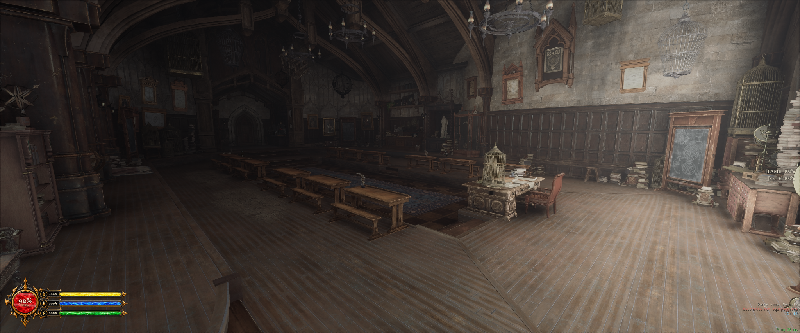
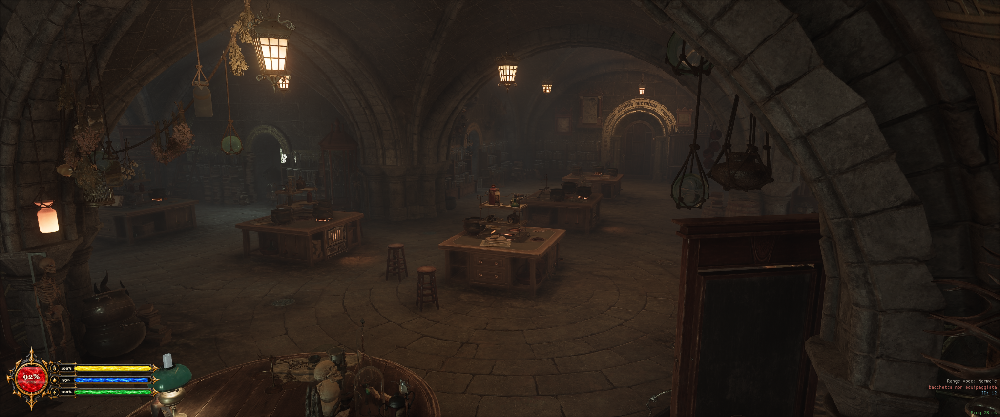
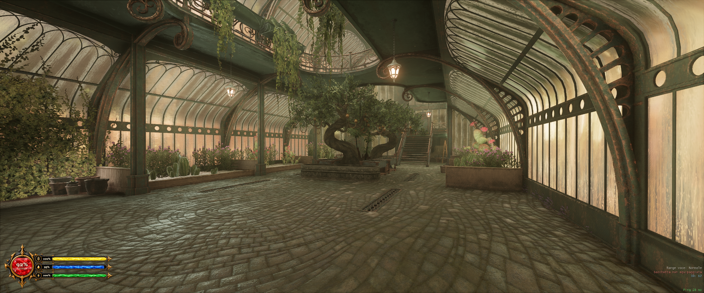
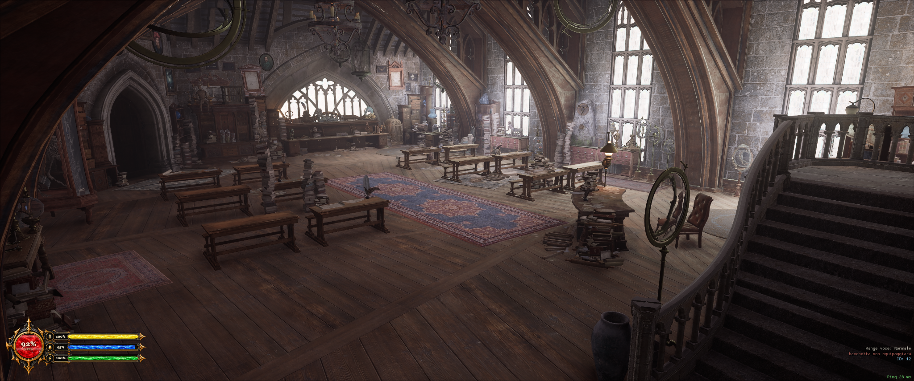
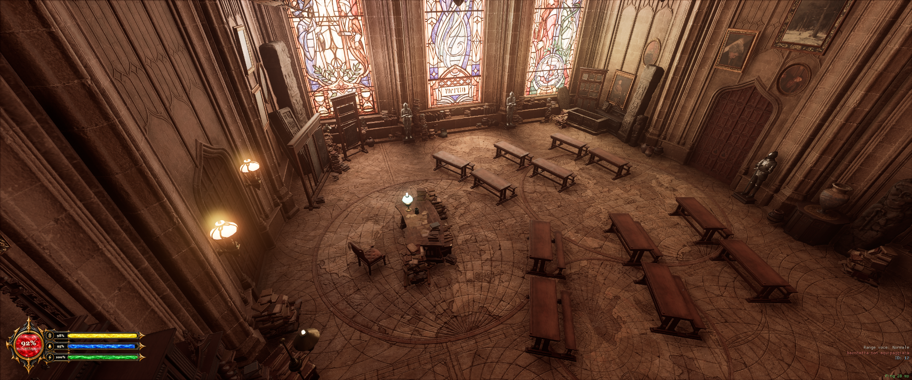
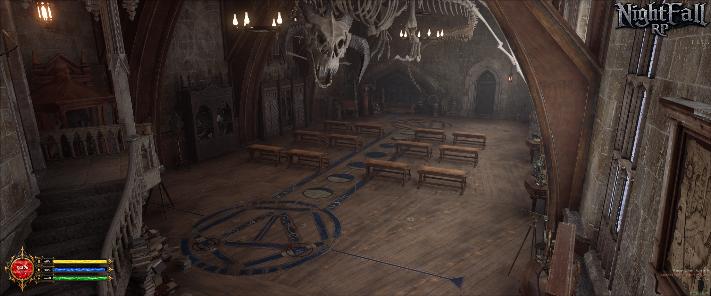
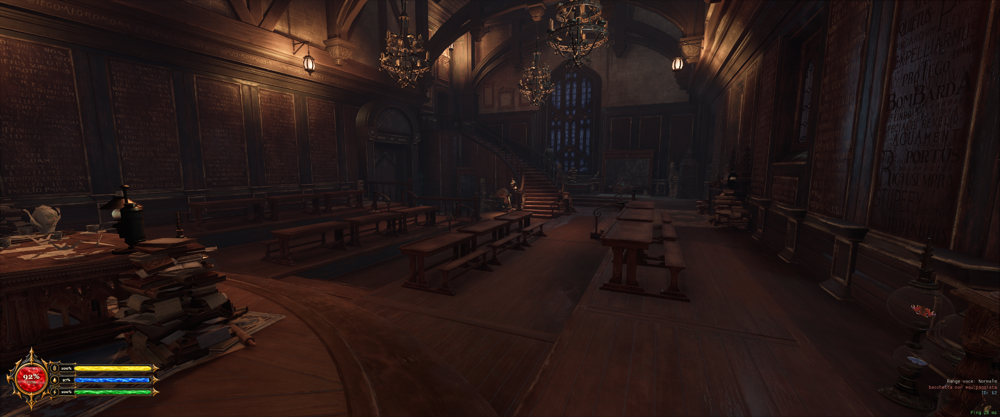

Manuale d'orientamento · Hogwarts
Trovare la strada nel castello Consultate la tavola dell'aula desiderata e seguite le indicazioni a partire dal luogo segnalato. Ogni itinerario si percorre a piedi, attraverso i passaggi e le scalinate della scuola.
Tutte le aule Ala di Astronomia Annesso della Biblioteca Torre Campanaria
✥ Stampa la guida
7 aule

Tavola 01 ✦ Immagine dell'aula
01 Ala di Astronomia
Trasfigurazione Oltre il portone orientale del cortile, a pochi passi dalla fontana.
⌖ Ubicazione Cortile di Trasfigurazione
Il percorso Partenza: Cortile di Trasfigurazione
1 Raggiungete il Cortile di Trasfigurazione e individuate la fontana al centro. 2 Dirigetevi verso il lato orientale del cortile. 3 Attraversate l'ingresso coperto: l'aula si trova subito oltre la porta.

Tavola 02 ⚗ Immagine dell'aula
02 Annesso della Biblioteca
Pozioni Scendendo dalla Sala Centrale, oltre le porte tra due armature.
⌖ Ubicazione Corridoio inferiore
Il percorso Partenza: Sala Centrale
1 Dalla statua nella Sala Centrale, procedete verso il lato meridionale e scendete la scalinata. 2 Una volta in basso, svoltate a sinistra. 3 Attraversate le porte fiancheggiate da armature e proseguite fino all'ingresso con i calderoni.

Tavola 03 ❧ Immagine dell'aula
03 Annesso della Biblioteca
Erbologia Dal passaggio settentrionale della Sala Centrale fino alle Serre.
Il percorso Partenza: Sala Centrale
1 Dalla Sala Centrale prendete l'uscita settentrionale che conduce alle Serre. 2 Seguite il passaggio e scendete fino al grande albero al centro della struttura. 3 Entrate dalla porta alla sinistra dell'albero.

Tavola 04 ♞ Immagine dell'aula
04 Ala di Astronomia
Cura delle Creature Magiche Un'aula interna ai piani alti della Torre di Difesa.
⌖ Ubicazione Torre di Difesa
Il percorso Partenza: Sala Centrale
1 Dalla Sala Centrale attraversate i grandi portoni verso la Torre di Difesa contro le Arti Oscure. 2 Svoltate a destra e imboccate la scalinata che risale all'interno della torre. 3 Salite fino al secondo piano e percorrete il corridoio: l'aula è sulla destra, riconoscibile dalle alte finestre e dalla scala interna.

Tavola 05 ⌛ Immagine dell'aula
05 Ala della Torre Campanaria
Storia della Magia La prima aula sul lato sinistro del passaggio verso il Corridoio Nord.
⌖ Ubicazione Corridoio Nord
Il percorso Partenza: Cortile di Trasfigurazione
1 Dal Cortile di Trasfigurazione raggiungete la porta sul lato occidentale. 2 Attraversatela per entrare nel Corridoio Nord. 3 L'aula si apre sulla sinistra, di fronte alla scalinata.

Tavola 06 ✧ Immagine dell'aula
06 Ala di Astronomia
Difesa Contro le Arti Oscure La grande aula nella Torre di Difesa, oltre le scalinate interne.
⌖ Ubicazione Torre di Difesa
Il percorso Partenza: Cortile di Trasfigurazione
1 Dal Cortile di Trasfigurazione prendete l'ingresso che conduce alla Torre di Difesa contro le Arti Oscure. 2 Seguite le scalinate della torre verso i piani delle aule. 3 Raggiungete la grande aula riconoscibile dallo scheletro sospeso.

Tavola 07 ✺ Immagine dell'aula
07 Ala di Astronomia
Incantesimi In alto nella Torre di Difesa, oltre le rampe principali.
⌖ Ubicazione Piani superiori della Torre
Il percorso Partenza: Cortile di Trasfigurazione
1 Entrate nella Torre di Difesa contro le Arti Oscure dal Cortile di Trasfigurazione. 2 Salite attraverso le rampe interne, proseguendo verso i piani superiori. 3 Raggiungete l'aula di Incantesimi lungo il corridoio della torre. Nessuna aula trovata. Provate con un altro nome.